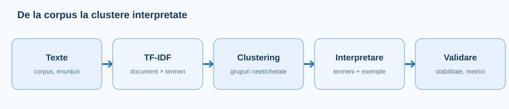
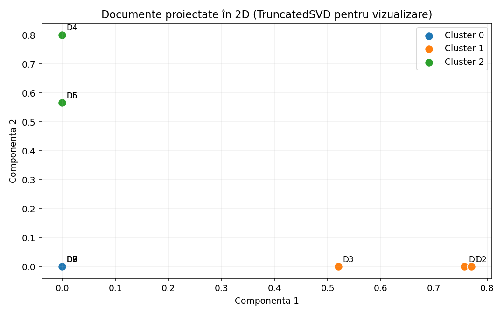
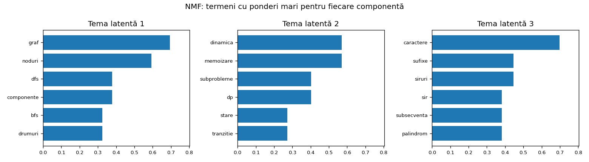
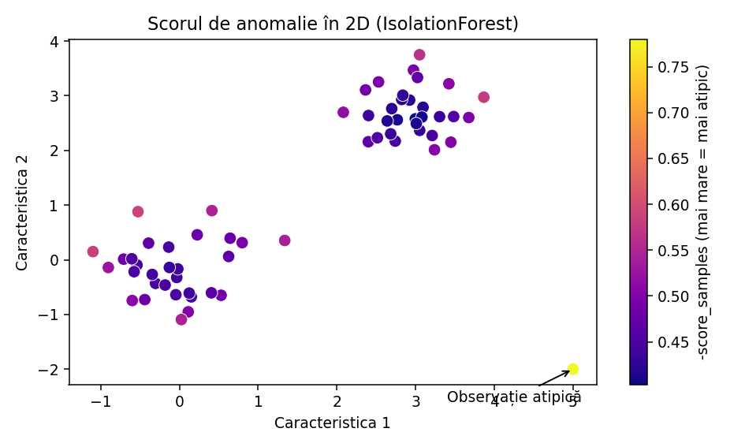

O lecție despre învățarea nesupervizată pe documente: cum grupăm texte fără etichete, cum descoperim teme latente și cum găsim observații neobișnuite. Explicații pas cu pas, modele scikit-learn, implementări elementare, aplicații în contextul ONIA și limite de interpretare.

Să presupunem că avem o arhivă cu 10.000 de probleme de programare, dar nu știm pentru fiecare categoria algoritmică. Putem căuta grupuri de enunțuri care folosesc vocabular asemănător, putem descoperi teme dominante sau putem semnala probleme foarte diferite de restul. Nu este necesar ca aceste operații să cunoască etichetele corecte.
În clasificarea supervizată fiecare exemplu de antrenare are o etichetă țintă. În clustering, algoritmul primește doar caracteristicile documentelor și construiește grupuri. În topic modeling, un document poate combina mai multe teme. În detectarea anomaliilor, încercăm să identificăm observații neobișnuite, fără să presupunem că ele sunt erori.
Gruparea unor enunțuri nu este același lucru cu identificarea categoriei algoritmice principale. Un cluster poate amesteca „graphs” și „dp” sau poate separa același topic în mai multe grupuri.
Primul pas este reprezentarea numerică. Pentru metodele clasice, o alegere bună de început este TF-IDF: documentele devin vectori într-un spațiu în care fiecare axă reprezintă un termen sau n-gramă. Deoarece majoritatea documentelor folosesc doar o mică parte din vocabular, matricea este rarefiată (sparse).
După vectorizare, putem aplica K-Means direct sau, pentru un spațiu foarte mare, putem reduce dimensionalitatea cu TruncatedSVD. Pentru interpretare examinăm documentele din fiecare grup, termenii centrelor și stabilitatea între inițializări. Nu este suficient să obținem doar o coloană cluster_id.
| Pas | Ce învățăm | Ce verificăm |
|---|---|---|
| Corpus | documente, sursă, etichete doar dacă există | duplicate, lungimi, clase ascunse |
| TF-IDF | vocabular și ponderi | min_df, n-grame, semnale utile |
| Model | clustere sau teme | inițializare, K, stabilitate |
| Interpretare | termeni reprezentativi, exemple | potrivire cu sensul sarcinii |
| Evaluare | metrici interne/externe | nu confundăm grupul cu eticheta |
După TF-IDF, fiecare text este un punct într-un spațiu cu multe dimensiuni. K-Means pornește cu K centre, atribuie fiecare punct centrului apropiat și recalculează centrele ca medii ale punctelor din grup. Repetă până la stabilizare sau până atinge limita de iterații. Pentru a vedea pașii ușor, experimentul interactiv începe cu puncte 2D.
Obiectivul K-Means este WCSS = Σ distanță_euclidiană(document, centru)², sumat pentru documentele din grupurile lor. Acest obiectiv nu știe nimic despre „sport”, „dp” sau „grafuri”; minimizează exclusiv o distanță geometrică.
Când documentele sunt reprezentate prin TF-IDF normalizat L2, punctele se află pe sfera unitate. Distanta euclidiană și similaritatea cosinus sunt corelate pentru perechi de vectori normalizați, dar K-Means obișnuit nu este identic cu spherical K-Means.

Exemplu: P1=(0,0), P2=(0,2), P3=(5,4), P4=(6,5) și centrele inițiale C0=(0,1), C1=(5,5). Pentru fiecare punct calculăm distanțele pătratice. P1 și P2 ajung la C0; P3 și P4 la C1. Noul C0 este media [(0+0)/2,(0+2)/2]=(0,1), iar noul C1 este (5.5,4.5).
Este exact mecanismul implementat în laborator: poți urmări fiecare iterație și poți vedea care documente sunt păstrate pe ramura/grupul corespunzător. Spre deosebire de arborele de decizie, K-Means nu produce reguli „dacă–atunci”, ci centroizi și atribuiri.
În implementarea de la zero, tratează explicit grupurile goale și criteriul de oprire. În scikit-learn aceste detalii sunt gestionate intern.
Algoritmul optimizează o funcție neconvexă și poate ajunge la rezultate diferite pentru centre inițiale diferite. init="k-means++" este un punct de plecare rezonabil. n_init=10 sau 20 repetă antrenarea și păstrează varianta cu inerție mai mică. random_state=0 este util pentru reproducibilitate.
Pe un corpus mic, dar cu vocabular mare, un set de centre ghinionist poate produce clustere aproape goale și unul foarte mare. Nu concluziona că numărul de clustere este greșit înainte să încerci inițializări multiple. max_iter limitează pașii unei rulări, iar tol controlează oprirea la schimbări mici.
Testează n_init=10/20 și câteva valori pentru K; compară mărimile clusterelor, termenii reprezentativi și stabilitatea, nu doar inertia.
K-Means trebuie să știe numărul de grupuri dinainte. Metoda cotului (inertia versus K) poate sugera un punct de compromis, dar inertia scade aproape mereu când K crește. Silhouette măsoară cât de bine este separat un document de alte grupuri, însă în spații TF-IDF foarte rare poate fi mică și chiar înșelătoare.
Când avem etichete de referință, putem calcula ARI/NMI pentru a vedea corespondența partițiilor, dar acestea sunt metrici externe. Într-o problemă cu etichete necunoscute nu folosim clasele ascunse pentru a decide K. O evaluare serioasă combină metrici, inspecția documentelor și stabilitatea la random_state.
Un Silhouette mare nu garantează teme bune; un score mic nu exclude un model util pentru navigarea corpusului.
Pentru fiecare grup raportăm numărul de documente, câteva documente reprezentative și termenii cu ponderi mari din centru. Un grup cu „bfs”, „dfs”, „drum” și „muchie” poate sugera „grafuri”, dar este doar o ipoteză. Înainte să îl numim „graphs”, deschidem documentele și verificăm erorile.
O analiză utilă în concurs afișează pentru fiecare cluster 5–10 exemple cu textul original, apoi distribuția etichetelor disponibile doar pe setul de antrenare. Ne interesează și documentele aproape de frontiera dintre clustere, unde interpretarea poate fi ambiguă.
Nu atribui automat eticheta clasei majoritare din cluster tuturor documentelor noi; o astfel de regulă trebuie validată separat față de un baseline supervizat.
Cu 30.000 de termeni, fiecare document ocupă doar câteva zeci/sute de coordonate nenule. Matricile sparse sunt eficiente pentru stocare, dar distanțele într-un spațiu foarte mare pot fi greu de interpretat. TruncatedSVD(n_components=100) comprimă spațiul fără a centra matricea, spre deosebire de PCA uzual.
După SVD este util să aplicăm Normalizer() când vrem să recuperăm vectori L2 pentru comparație. Scopul nu este să „pictăm semantic” automat fiecare document, ci să comprimăm variații comune și uneori să facem clusteringul mai stabil și mai rapid.
Pentru corpusuri foarte mici, n_components trebuie să fie mai mic decât limita impusă de dimensiunea matricei. Nu folosi n_components=100 pe 6 documente.
K-Means clasic folosește toate documentele în actualizările centrelor. MiniBatchKMeans actualizează folosind loturi mici, ceea ce reduce costul pe seturi foarte mari. batch_size controlează câte exemple intră într-un mini-lot, iar n_init și random_state au în continuare rol de stabilitate/reproductibilitate.
La câteva sute de documente, KMeans clasic este de obicei mai simplu pentru învățare. Pentru zeci/sute de mii de documente, încearcă MiniBatchKMeans și compară timpul, stabilitatea și calitatea grupurilor cu aceeași validare.
Nu promite aceeași împărțire ca la KMeans clasic: mini-loturile sunt o aproximare.
Clusteringul repartizează în mod obișnuit fiecare document într-un singur grup. Topic modeling presupune că un document poate vorbi despre mai multe teme. De exemplu, un enunț despre „numărarea drumurilor într-un graf folosind programare dinamică” poate conține simultan temele „grafuri” și „dp”.
Într-un model de teme, obținem o matrice document–temă și o matrice temă–termen. Fiecare temă este descrisă prin ponderi pentru cuvinte, nu printr-un nume sigur. Interpretarea și denumirea temei rămân sarcina noastră.
Topic modeling poate furniza caracteristici pentru clasificare, dar nu înlocuiește automat clasificatorul care prezice una dintre cele cinci etichete ONIA 266.

Presupunem că avem matricea nenegativă X cu documente pe linii și termeni pe coloane. NMF caută aproximarea X ≈ W × H, unde W are dimensiunea documente × teme, iar H are dimensiunea teme × termeni. Ponderile sunt nenegative, așa că o temă poate fi interpretată drept o combinație aditivă de termeni.
Pentru text, o combinație practică este TfidfVectorizer + NMF. Parametrul n_components alege câte teme vrem; init="nndsvda" oferă o inițializare controlată pe date mici; random_state facilitează comparațiile; max_iter poate fi mărit dacă nu converge.
Nu avem garanția că toate temele vor avea un sens clar. O temă poate reflecta stilul de scriere, sursa sau cuvinte generale.
W nu are obligatoriu linii cu suma 1; nu interpreta ponderile NMF drept probabilități calibrate.
Latent Dirichlet Allocation (LDA) presupune, simplificat, că fiecare document are o distribuție peste teme și că fiecare temă are o distribuție peste cuvinte. Un cuvânt observat este generat printr-o alegere latentă a temei și apoi a termenului. Pentru aplicații clasice, LDA se antrenează pe frecvențe nenegative furnizate de CountVectorizer.
În scikit-learn, n_components este numărul de teme, learning_method="batch" lucrează cu toate datele și este bun pentru exemple mici, iar learning_method="online" este util în unele situații mari. max_iter controlează numărul maxim de iterații. doc_topic_prior și topic_word_prior influențează cât de concentrate sunt distribuțiile.
Proporțiile document–temă din transform se pot interpreta ca ponderi probabilistice normalizate, spre deosebire de W din NMF.
Nu folosi TF-IDF ca înlocuitor automat pentru count-uri în LDA; respectă ipoteza modelului și verifică rezultatele.
Dacă vrei să împarți documentele în grupuri pentru o interfață de navigare, începe cu K-Means. Dacă vrei să descrii fiecare document printr-un amestec de teme și lucrezi deja cu TF-IDF, încearcă NMF. Dacă urmărești explicit un model probabilist de cuvinte/teme pe frecvențe, încearcă LDA.
Nu este o competiție cu un câștigător universal. Comparația corectă implică documente reprezentative, termeni, stabilitate și un scop de utilizare concret. Pentru o problemă supervizată ONIA, verifică întotdeauna dacă reprezentările adăugate chiar îmbunătățesc Macro-F1.
| Problema practică | Punct de pornire | Ce verificăm |
|---|---|---|
| Organizarea arhivei de probleme | TF-IDF + KMeans | exemplele reprezentative per grup |
| Identificarea mai multor teme într-un enunț | TF-IDF + NMF | top termeni + pondere document–temă |
| Amestecuri probabilistice de teme | CountVectorizer + LDA | stabilitatea temelor și proporțiile |
| Clasificare în 5 categorii ONIA | TF-IDF + LogisticRegression / LinearSVC | Macro-F1 pe validare |
Un document poate fi atipic pentru că este într-o altă limbă, are o structură neobișnuită, este mult mai scurt decât restul sau descrie o temă rară. Asta nu înseamnă automat că este greșit, suspect sau că trebuie eliminat. Detectarea anomaliilor este utilă pentru controlul calității, analiza corpusului și selectarea documentelor pentru verificare umană.
În NLP clasic, o abordare este TF-IDF → TruncatedSVD → IsolationForest sau LocalOutlierFactor. Reducerea dimensionalității poate stabiliza modelele care au dificultăți în spațiul foarte rar. Este însă posibil ca proiecția să piardă anomalii rare — verifică documentele reale.

IsolationForest construiește arbori de partiționare aleatoare. Observațiile izolate după un număr mic de împărțiri tind să fie considerate mai atipice. n_estimators este numărul de arbori; max_samples câte exemple participă la fiecare arbore; contamination stabilește proporția anticipată de outlieri folosită la alegerea pragului; random_state reproduce experimentul.
score_samples returnează un scor unde valorile mai mici sugerează exemple mai anormale. În unele grafice folosim -score_samples pentru o vizualizare intuitivă (mai mare = mai atipic), dar trebuie precizată convenția.
Nu eliminăm automat anomaliile: ele pot fi exact cazurile interesante pentru un concurs.
Setarea contamination=0.05 nu garantează că 5% din exemple sunt defecte; impune aproximativ un prag de decizie.
LOF compară densitatea locală a unui punct cu densitatea vecinilor săi. Un punct înconjurat de vecini mult mai denși poate fi considerat anormal. n_neighbors influențează scara locală analizată, iar contamination influențează pragul predicției.
În modul implicit, LOF este folosit pentru detectarea outlierilor din datele pe care le primește la fit_predict. Pentru predicții pe date complet noi trebuie novelty=True și trebuie respectat fluxul de antrenare separat. Pe texte, alegem cu grijă reprezentarea și metrica.
LOF nu este un detector universal de spam; un text foarte scurt sau o limbă rară pot produce scoruri neobișnuite fără ca documentul să fie problematic.
Metricile interne pentru clustering (silhouette, Calinski–Harabasz, Davies–Bouldin) măsoară structura geometrică, nu semnificația etichetelor. Dacă dispunem de referințe pentru analiză, ARI/NMI pot descrie asocierea partițiilor, dar nu transformă un clustering într-un clasificator.
În detectarea anomaliilor, dacă avem exemple confirmate de anomalii, putem evalua precision, recall și PR-AUC pe un set separat. Dacă nu avem etichete, măsurăm stabilitatea, inspectăm manual exemplele semnalate și evităm afirmații definitive despre calitate.
Dacă folosești testul ascuns ca să alegi valori de contamination sau K, produci leakuri de evaluare.
Problema din arhiva ONIA 2026 folosește un fișier problems.csv cu enunțuri de probleme Codeforces. Câmpurile descrise sunt id, title, description, statement, input_format, output_format, examples, time_limit, memory_limit, rating.
Cerința oficială este să prezici exact una dintre etichetele dp, geometry, graphs, number theory, strings; scorul folosește Macro-F1. Prin urmare, etapele nesupervizate pot ajuta la explorare, detectarea duplicatelor, analiza vocabularului și construcția caracteristicilor, dar predicția finală trebuie evaluată supervizat.
Exemplele din această lecție sunt sintetice și nu reprezintă o soluție verificată sau un scor obținut pe fișierele oficiale.
Începe cu un baseline: combină câmpurile text permise, împarte train/validation în mod corect și evaluează TfidfVectorizer + LogisticRegression sau LinearSVC. Apoi, numai pe datele permise pentru antrenare, încearcă clustering pe TF-IDF și studiază grupurile rezultate.
Pentru fiecare cluster afișează 5 enunțuri, top 10 termeni, distribuția etichetelor cunoscute și documentele aflate aproape de centru. Dacă grupurile seamănă cu temele de programare, poți încerca un scor suplimentar per cluster ca feature într-un model supervizat. Validarea confirmă dacă ideea ajută sau este doar atractivă vizual.
Nu antrena vectorizatorul sau NMF pe foldul de validare când compari modele: pune toate transformările în Pipeline.
Cu NMF poți obține, pentru fiecare problemă, 5–20 de coordonate care exprimă amestecul de teme latente. Aceste coordonate pot alimenta o regresie logistică, un SVM sau alt clasificator. Alternativ, poți concatena TF-IDF cu aceste coordonate folosind un FeatureUnion sau ColumnTransformer, cu grijă la dimensiuni și la scalare.
O tehnică nesupervizată nu devine automat utilă pentru predicție: putem pierde informație discriminativă când comprimăm prea agresiv spațiul. De aceea comparăm macro-F1 al baseline-ului cu macro-F1 al variantei cu NMF folosind exact aceeași împărțire și aceleași condiții.
Modelele de topic pot învăța și variații de stil sau lungime; temele nu sunt neapărat categorii algoritmice.
Greșeli tipice: alegem K după testul final; presupunem că cluster 0 = graphs; confundăm LDA (topic model) cu Linear Discriminant Analysis; aplicăm PCA care centrează matricea sparse; antrenăm NMF înainte de cross-validation; ștergem anomaliile fără inspecție; aplicăm LDA direct pe TF-IDF fără justificare.
Protocol recomandat: stabilește sarcina → construiește baseline → testează o singură transformare → compară pe validare proprie → inspectează erorile → documentează parametrii și random_state. Pentru fiecare îmbunătățire trebuie să poți spune ce problemă a rezolvat.
Nu există un K sau un număr de teme universal. O alegere bună este legată de corpus, costuri și scopul aplicației.
Exemplele sunt independente și conțin date sintetice. Cele care folosesc biblioteci necesită numpy, pandas sau scikit-learn instalate. Codul se copiază cu indentarea originală, inclusiv în versiunile locale ale site-ului.
documente = [ "grafuri noduri muchii drumuri", "grafuri bfs componente conexe", "programare dinamica memoizare", "dinamica subprobleme tranzitii", "sir caractere palindrom", "siruri prefix sufix" ] for i, text in enumerate(documente): print(f"D{i}: {text}")
Ce observăm? Înaintea unui algoritm definim ce reprezintă un document și verificăm dacă textele sunt suficiente pentru a forma grupuri coerente.
from sklearn.feature_extraction.text import CountVectorizer texte = ["graf nod nod", "graf drum", "dinamica stare"] v = CountVectorizer() X = v.fit_transform(texte) print(v.get_feature_names_out()) print(X.toarray())
Ce observăm? Matricea are câte un rând pentru document și câte o coloană pentru termen. Observăm că matricea este în mare parte nulă.
from sklearn.feature_extraction.text import TfidfVectorizer texte = [ "graf nod drum BFS", "graf nod DFS", "dinamica stare memoizare", "dp subprobleme memoizare", "sir caractere prefix", "string sufix pattern" ] v = TfidfVectorizer(ngram_range=(1, 2), norm="l2") X = v.fit_transform(texte) print("Forma:", X.shape) print("Primele 12 caracteristici:", v.get_feature_names_out()[:12])
Ce observăm? TF-IDF reduce ponderea termenilor foarte răspândiți; bigramele păstrează unele expresii locale.
def distanta2(a, b): return sum((x - y) ** 2 for x, y in zip(a, b)) p = [1, 2] centre = [[0, 0], [3, 2]] for j, c in enumerate(centre): print(j, distanta2(p, c)) print("Cluster ales:", min(range(len(centre)), key=lambda j: distanta2(p, centre[j])))
Ce observăm? Nu avem nevoie de radical pentru a compara două distanțe euclidiene; ordinea rămâne aceeași.
puncte = [[0, 0], [0, 2], [5, 4], [6, 5]] centre = [[0, 1], [5, 5]] def dist2(a, b): return sum((a[i] - b[i]) ** 2 for i in range(len(a))) etichete = [min(range(len(centre)), key=lambda j: dist2(p, centre[j])) for p in puncte] centre_noi = [] for j in range(len(centre)): grup = [p for p, e in zip(puncte, etichete) if e == j] centru = [sum(p[d] for p in grup) / len(grup) for d in range(2)] centre_noi.append(centru) print("Atribuiri:", etichete) print("Centre noi:", centre_noi)
Ce observăm? Se văd separat cele două operații: atribuirea la centrul apropiat și recalcularea mediei fiecărui grup.
import numpy as np from sklearn.feature_extraction.text import TfidfVectorizer from sklearn.cluster import KMeans texte = [ "graf bfs noduri", "graf dfs muchii", "graf drumuri", "dp stare memoizare", "dinamica subprobleme", "dp tranzitii", "siruri palindrom", "sir caractere sufix", "cautare pattern" ] X = TfidfVectorizer().fit_transform(texte) m = KMeans(n_clusters=3, n_init=20, random_state=7) etichete = m.fit_predict(X) for i, e in enumerate(etichete): print(i, "cluster", e, texte[i]) print("Mărimi:", np.bincount(etichete))
Ce observăm? ID-urile 0, 1, 2 sunt arbitrare. Clusterele se interpretează din documentele și termenii lor, nu din indice.
from sklearn.feature_extraction.text import TfidfVectorizer from sklearn.cluster import KMeans texte = ["tenis meci sport", "fotbal stadion sport", "python algoritm cod", "python date cod", "reteta prajitura", "reteta supa"] v = TfidfVectorizer() X = v.fit_transform(texte) m = KMeans(n_clusters=3, n_init=20, random_state=2).fit(X) termeni = v.get_feature_names_out() for j, centru in enumerate(m.cluster_centers_): indici = centru.argsort()[-4:][::-1] print(j, termeni[indici].tolist())
Ce observăm? Topul de termeni propune o interpretare, dar nu dovedește automat că tema este corectă. E necesară inspectarea documentelor.
from sklearn.feature_extraction.text import TfidfVectorizer from sklearn.cluster import KMeans from sklearn.metrics import silhouette_score texte = ["sport tenis", "sport fotbal", "tenis meci", "python cod", "python algoritm", "date python", "reteta tort", "reteta supa", "tort prajitura"] X = TfidfVectorizer().fit_transform(texte) for k in (2, 3, 4): etichete = KMeans(n_clusters=k, n_init=20, random_state=0).fit_predict(X) print(k, "silhouette =", round(silhouette_score(X, etichete), 3))
Ce observăm? Silhouette măsoară separarea geometrică; nu garantează semnificația tematică. Verificăm și conținutul fiecărui grup.
from sklearn.feature_extraction.text import TfidfVectorizer from sklearn.decomposition import TruncatedSVD from sklearn.preprocessing import Normalizer from sklearn.pipeline import make_pipeline texte = ["graf bfs muchii", "graf dfs noduri", "dinamica stare", "dp memoizare", "sir palindrom", "sir prefix"] X = TfidfVectorizer().fit_transform(texte) lsa = make_pipeline(TruncatedSVD(n_components=2, random_state=0), Normalizer()) X_redus = lsa.fit_transform(X) print("Original:", X.shape, "Redus:", X_redus.shape)
Ce observăm? TruncatedSVD nu centrează matricea sparse și este potrivit pentru TF-IDF. După proiecție, normalizarea L2 facilitează compararea vectorilor.
from sklearn.cluster import MiniBatchKMeans from sklearn.feature_extraction.text import TfidfVectorizer texte = ["sport tenis", "sport fotbal", "python cod", "python algoritm", "reteta supa", "reteta tort"] * 8 X = TfidfVectorizer().fit_transform(texte) m = MiniBatchKMeans(n_clusters=3, batch_size=16, n_init=10, random_state=3) print(m.fit_predict(X)[:12])
Ce observăm? Folosește mini-loturi când ai multe documente și vrei timp de antrenare mai mic; verifică stabilitatea soluției.
from sklearn.feature_extraction.text import TfidfVectorizer from sklearn.decomposition import NMF texte = ["tenis meci sport", "fotbal campionat sport", "python cod algoritm", "date python cod", "supa reteta ingrediente", "tort reteta ciocolata"] v = TfidfVectorizer() X = v.fit_transform(texte) nmf = NMF(n_components=3, init="nndsvda", random_state=0, max_iter=800) W = nmf.fit_transform(X) H = nmf.components_ termeni = v.get_feature_names_out() for j, topic in enumerate(H): print("Tema", j, termeni[topic.argsort()[-4:][::-1]].tolist()) print("Documentul 0 - ponderi:", W[0].round(3))
Ce observăm? Matricea W conține ponderea fiecărei teme în fiecare document; H descrie temele prin termeni ponderați. Ponderile nu sunt probabilități calibrate.
from sklearn.feature_extraction.text import CountVectorizer from sklearn.decomposition import LatentDirichletAllocation texte = ["tenis meci sport", "fotbal campionat sport", "python cod algoritm", "date python cod", "supa reteta ingrediente", "tort reteta ciocolata"] v = CountVectorizer() X = v.fit_transform(texte) lda = LatentDirichletAllocation(n_components=3, learning_method="batch", max_iter=20, random_state=0) proportii = lda.fit_transform(X) termeni = v.get_feature_names_out() for j, topic in enumerate(lda.components_): print("Tema", j, termeni[topic.argsort()[-4:][::-1]].tolist()) print("Proporții doc0:", proportii[0].round(3), "sumă:", round(sum(proportii[0]), 3))
Ce observăm? LDA este conceput pentru numărări nenegative; vectorii per-document oferă proporții ale temelor ce însumează aproximativ 1.
from sklearn.decomposition import NMF from sklearn.feature_extraction.text import TfidfVectorizer texte = ["graf bfs", "graf dfs", "dinamica stare", "dp memoizare", "sir prefix", "sir sufix"] X = TfidfVectorizer().fit_transform(texte) for k in (2, 3): model = NMF(n_components=k, init="nndsvda", random_state=0, max_iter=800) model.fit(X) print(k, "eroarea reconstrucției:", round(model.reconstruction_err_, 3))
Ce observăm? Eroarea de reconstrucție scade adesea cu mai multe teme, dar numărul potrivit depinde și de interpretabilitate și stabilitate.
from sklearn.feature_extraction.text import TfidfVectorizer from sklearn.decomposition import TruncatedSVD from sklearn.preprocessing import Normalizer from sklearn.ensemble import IsolationForest texte = ["graf bfs noduri", "graf dfs muchii", "graf drum minim", "dfs componente graf", "bfs drum graf", "reteta prajitura ciocolata"] X = TfidfVectorizer().fit_transform(texte) Y = Normalizer().fit_transform(TruncatedSVD(n_components=2, random_state=0).fit_transform(X)) m = IsolationForest(contamination=0.17, random_state=0, n_estimators=200) scor = -m.fit(Y).score_samples(Y) for t, s in sorted(zip(texte, scor), key=lambda x: -x[1]): print(f"{s:.3f}", t)
Ce observăm? Scorurile sunt relative la distribuția corpusului și reprezentarea aleasă. Un text marcat ca atipic nu este automat greșit sau fraudulos.
import numpy as np from sklearn.neighbors import LocalOutlierFactor X = np.array([[0, 0], [0.1, 0.2], [0.2, 0.1], [0.3, 0.2], [4, 4]], dtype=float) lof = LocalOutlierFactor(n_neighbors=2) print("Etichete (-1=outlier):", lof.fit_predict(X)) print("Scor negativ:", lof.negative_outlier_factor_.round(2))
Ce observăm? LOF compară densitatea vecinilor; exemplul numeric este geometric, nu text brut. În NLP avem nevoie mai întâi de reprezentarea numerică.
from collections import Counter, defaultdict etichete_adevarate = ["graphs", "graphs", "dp", "dp", "strings", "strings"] clustere = [2, 2, 0, 0, 1, 1] grupari = defaultdict(list) for c, y in zip(clustere, etichete_adevarate): grupari[c].append(y) for c, valori in sorted(grupari.items()): print("Cluster", c, Counter(valori))
Ce observăm? Etichetele cunoscute sunt folosite numai pentru analiză, nu pentru a transforma un algoritm nesupervizat în clasificator.
import pandas as pd # Înlocuiește cu calea fișierului oferit de platformă. # Structura corespunde enunțului problemei #266. exemplu = pd.DataFrame({ "id": ["P1", "P2"], "title": ["Shortest path", "Prime factors"], "description": ["Find a path in a graph", "Factorize integers"], "statement": ["Given vertices and edges...", "Given an integer n..."] }) exemplu["text"] = ( exemplu["title"].fillna("") + " " + exemplu["description"].fillna("") + " " + exemplu["statement"].fillna("") ) print(exemplu[["id", "text"]].to_string(index=False))
Ce observăm? Datele sunt ilustrative, nu fișierul oficial. Nu introducem eticheta țintă în documentul vectorizat.
import numpy as np from sklearn.feature_extraction.text import TfidfVectorizer from sklearn.decomposition import NMF from sklearn.linear_model import LogisticRegression from sklearn.pipeline import make_pipeline train_text = ["graph bfs edges", "graph dfs nodes", "dynamic programming memoization", "dp states transitions", "string prefix palindrome", "string suffix pattern"] y_train = ["graphs", "graphs", "dp", "dp", "strings", "strings"] model = make_pipeline( TfidfVectorizer(ngram_range=(1, 2)), NMF(n_components=3, init="nndsvda", max_iter=600, random_state=0), LogisticRegression(max_iter=1000) ) model.fit(train_text, y_train) print(model.predict(["graph shortest path edges", "string prefix search"]))
Ce observăm? Este o demonstrație pe trei clase sintetice, nu un scor pentru problema oficială cu cinci clase. NMF extrage trăsături; LogisticRegression realizează clasificarea.
from sklearn.model_selection import StratifiedKFold, cross_val_score from sklearn.pipeline import make_pipeline from sklearn.feature_extraction.text import TfidfVectorizer from sklearn.linear_model import LogisticRegression texte = ["graph bfs", "graph dfs", "graph shortest path", "graph edges", "dp memoization", "dp table", "dynamic states", "dynamic transitions", "string pattern", "string prefix", "string substring", "string suffix"] y = ["graphs"] * 4 + ["dp"] * 4 + ["strings"] * 4 model = make_pipeline(TfidfVectorizer(ngram_range=(1, 2)), LogisticRegression(max_iter=1000)) cv = StratifiedKFold(n_splits=2, shuffle=True, random_state=0) print(cross_val_score(model, texte, y, cv=cv, scoring="f1_macro"))
Ce observăm? Un baseline supervizat este punctul corect de comparație. Pentru #266 folosește cele cinci clase și un set de validare fără leakuri.
from sklearn.feature_extraction.text import TfidfVectorizer texte = ["graph graph edges", "graph path", "dynamic states", "string prefix"] for config in [(1, 1), (1, 2)]: model = TfidfVectorizer(ngram_range=config, min_df=1) X = model.fit_transform(texte) print("ngram_range=", config, "shape=", X.shape, "nnz=", X.nnz)
Ce observăm? N-gramele pot ajuta semantic, dar cresc rapid vocabularul și costul memoriei. Matricile rare stochează doar valorile nenule.
| Situație reală | Alegerea inițială | Ce experimentezi apoi |
|---|---|---|
| Arhivă mică, 2–4 teme probabile | TF-IDF + KMeans(n_clusters=3,n_init=20) | K între 2 și 6; stabilitate la random_state |
| Multe documente, timp limitat | MiniBatchKMeans(batch_size=256) | Calitate vs timp față de KMeans clasic |
| Zeci de mii de termeni rarefiați | TruncatedSVD + Normalizer | n_components pe validare; termeni interpretabili |
| Documente cu mai multe teme | NMF(n_components=5) pe TF-IDF | K, init, reconstrucție, stabilitate |
| Model probabilist al temelor | CountVectorizer + LDA | număr teme, priors, iterații |
| Texte rare, atipice, pentru verificare | LSA + IsolationForest | contamination, n_estimators, inspecție umană |
Deschide laboratorul independent pentru: K-Means în 2D cu actualizări reale, gruparea unui mini-corpus TF-IDF, explorarea termenilor de tip topic, scoruri de anomalii și comparația dintre clusterizare și etichetele ONIA.
Deschide laboratorul într-o pagină separată ↗Documentația scikit-learn: Clustering text documents using K-Means · Decompozire: TruncatedSVD/NMF/LDA · Novelty and Outlier Detection · ONIA: Legenda lui Algorel (#266).